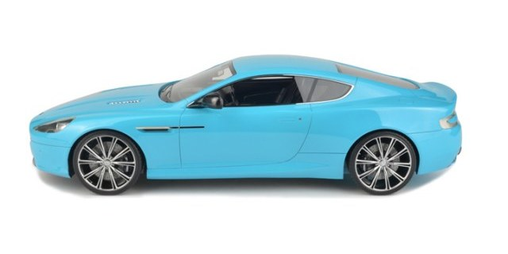
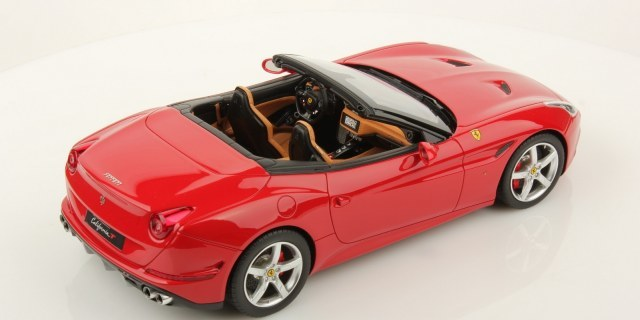
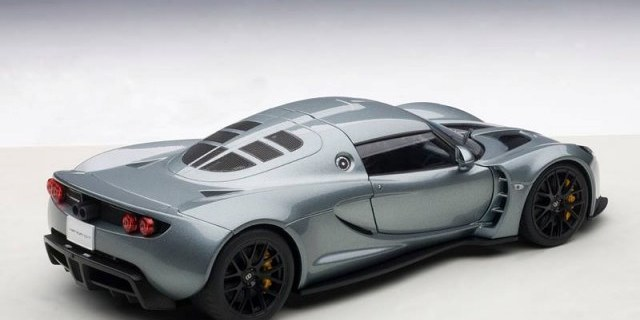

RELEASED: Preproduction Images of Paragon's Bmw i8
First pictures of Paragon’s BMW i8 were unveiled today. The model is shown in pre-production form, unless the photos are of poor quality, to me the model looks black, though scheduled colours were to include Blue Matt and Frozen Grey. As shown in the photos, access to the interior bits will be the only option here, this was at the request of BMW.

ALL-NEW: Baby Blue Aston Martin DB9 by FrontiArt
Fronti-Art starts off 2015 with a re-skin of the 1:18 Aston Martin DB9. Baby Blue is the latest colour for this fine piece. The Aston Martin is also sealed and cast in resin. Only 30 pieces will be produced worldwide

MR Models released open-top Ferrari California T
The Ferrari California T Open Top in Red is the first in a number of colours to come from MR. The model features a nicely detailed interior and wheels. Ferrari California T Open is available for immediate delivery.

AUTOart reveals Hennessey Venom GT
The Silver presented here is definitely darker than the pre-production piece, maybe even with an added blue? AUTOart is saving the best for last, and by that we mean the yellow of course.